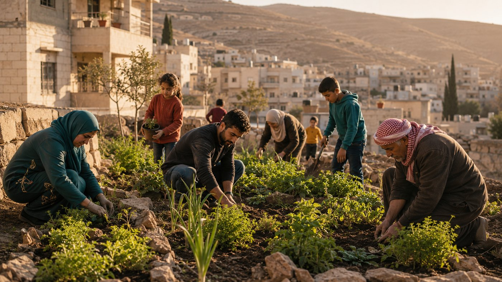

About HopeBridge
Connecting compassion with community needs.
What this platform does
HopeBridge is one place where three groups of people meet: the donors who give, the families who need help, and the administrators who make sure the help reaches the right people.
A donor picks a program and gives to it. A family applies to the same program and explains their situation. An administrator reads the application, decides, and writes back. Every donation, every application and every decision is written down, so nothing depends on somebody remembering it.

The three kinds of account
Donors
Browse the programs, give to the cause you care about, and keep every receipt in one place. Once you have given to a program you also receive the progress reports written about it, so you can see what your money actually did.
Beneficiaries
Register, fill in your details once, and an administrator checks whether you are eligible. After you are approved you can apply to any program that matches your situation, follow each application, and message the charity privately when you need to.
Administrators
Approve or refuse beneficiary profiles and applications, add and retire programs, publish progress reports for donors, and read the dashboard that shows who gives, how often, and which programs are closest to their goal.
How a donation travels
1. Choose
A donor opens the programs page, reads who each program is for, and picks one.
2. Give
The donation is recorded against that program and a receipt is created straight away, ready to print.
3. See it work
When the charity publishes a report about that program, it appears on the donor's updates page and on the impact page.